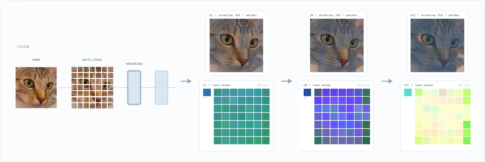
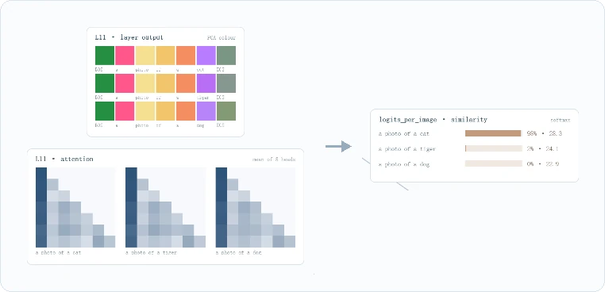
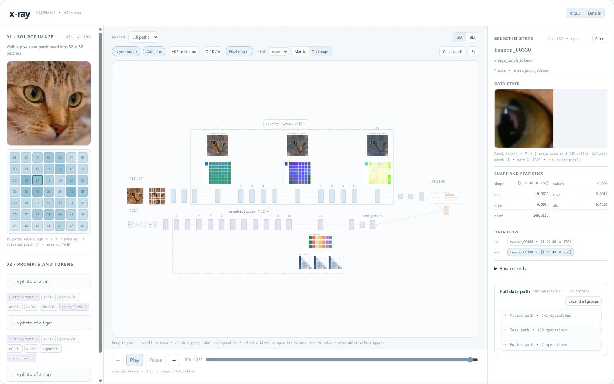
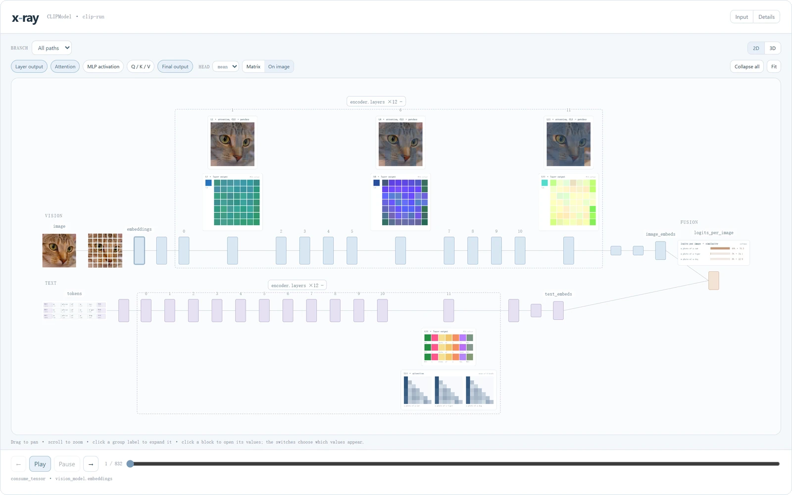
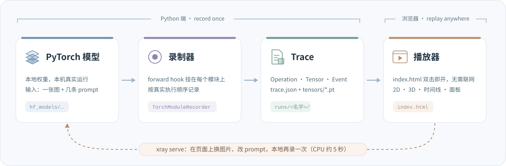

跑一次真实的 PyTorch 推理，把它变成一个能一层层打开、一步步回放的网页。
Record one real PyTorch inference, then replay it layer by layer in your browser, fully offline.
结构图只告诉你网络长什么样。x-ray 告诉你：这一张图、这几句话送进去以后，每一层到底算出了什么。
它在本机跑一次真实推理，按执行顺序记下每一次模块调用、每一个 Tensor、每一个事件，再导出成网页。你可以展开任意一层，看它的输出和注意力；也可以拖动时间线，把整个前向过程一步一步重放。浏览器里不跑模型，页面上的每个数都来自那一次真实运行。
✨ 亮点
- 真实推理，不是示意图：模块、Tensor、事件都来自那一次前向；时间线就是真实的执行顺序，不是拓扑排序。
- 每一层都能打开：层输出按 PCA 着色，注意力可以画成矩阵，也可以直接叠在原图上，还有 MLP 激活和 Q / K / V。
- 每个值都能追到源头：点任意一块、一个面板或一个 patch，右栏列出形状、统计量，以及它从哪个算子来、流向哪里。
- 2D、3D 随时切换：平面图看结构，3D 看层叠；展开的层和打开的面板在两种视图间保持不变。
- 离线页面，拿走就能看：导出的
index.html已经嵌好全部 trace 和面板数据，连同assets/里的原图一起拷走，双击就能打开。 - 在页面上换输入：
xray serve起一个本地服务，上传图片、改几条 prompt，CPU 上大约 5 秒就录好新的一次。
🔬 跟着一张猫的照片走一遍
下面的图都截自同一次运行：CLIP ViT-B/32 看一张猫的照片，同时读三条 prompt：a photo of a cat、a photo of a tiger、a photo of a dog。
① 图片被切成 49 个 patch，一层层往上传。 打开视觉编码器的任意一层：上面是 CLS 对各个 patch 的注意力，直接叠在原图上，越暗表示越少被关注；下面是这一层每个 token 的输出，投影到 PCA 前三个主成分后着色。各层共用同一组 PCA 基，所以颜色可以跨层比较。

② 文字那一路也能打开。 每条 prompt 一行，每个 token 一格。文本编码器的注意力是因果的，所以画出来是一个下三角。最后图文向量做相似度，softmax 给出答案：98% 是猫，2% 像老虎，几乎不可能是狗。

③ 每个值都能追到源头。 在左栏点第 17 个 patch（猫的眼睛），右栏马上给出它对应的原图像素、形状与统计量，以及它从哪个算子来、流向哪里。在右栏的 Full data path 里点某个算子的 Focus operation，模型图会自动把镜头移到那一块。

④ 把整张图铺满。 左右两栏看过之后，可以用顶栏的 Input、Details 收起，模型图会铺满整个窗口并保持居中；图右上角的 2D | 3D 随时切换视角。 点旁边的 Fullscreen，模型图、工具栏和时间线会一起全屏显示；点 Exit fullscreen 或按 Esc 退出。浏览器不允许原生全屏时，会铺满当前页面。

⚙️ 它是怎么工作的

- 录制：给模型的每个模块挂上 forward hook，按真实执行顺序记下三样东西：Operation（哪个模块被调用、吃进什么、吐出什么）、Tensor（形状、统计量、预览和原始值）、Event（发生的先后）。
- Trace：一次运行的全部记录，就是
trace.json加上tensors/*.pt。播放器要画的中间值（PCA 颜色、注意力等）在导出时从原始 Tensor 算好，嵌进页面。 - 回放：播放器是纯前端页面，只读数据、不跑模型。
xray serve打开旧运行时会按当前代码重新生成页面，以前录的运行也能用上新界面。
一句话：record once, replay anywhere。Python 负责执行和记录，浏览器只负责看。
🚀 三步上手
1. 安装
conda env create -f environment.yml
conda activate xraynns
python -m pip install -e ".[clip]"
装好后就有了 xray 命令。CPU 就够用，Apple Silicon 上可以用 MPS。
2. 把 CLIP 权重下载到本地（只要 PyTorch 权重，约 580 MB）
hf download openai/clip-vit-base-patch32 \
--local-dir models/openai/clip-vit-base-patch32 \
--exclude "*.h5" --exclude "*.msgpack"
权重放在 models/ 下，这个目录不入库（见下面的"目录约定"）。x-ray 只读本地文件，运行时用 --model 传入模型目录，自己不会联网下载。
3. 打开页面
xray serve --model models/openai/clip-vit-base-patch32
浏览器访问 http://127.0.0.1:8765/。第一次还没有任何运行，页面会直接给出上传表单：选一张图、写几条 prompt、点 Run CLIP，几秒后页面就会打开这次运行。点 encoder.layers ×12 + 展开各层，再点某一层打开它的面板。以后想换输入，点顶栏的 New run 就行。
不想起服务的话，也可以在命令行录一次，生成的页面双击就能打开：
xray clip-run \
--model models/openai/clip-vit-base-patch32 \
--image cat.png \
--text "a photo of a cat" --text "a photo of a dog" \
--output runs/clip/cat
🗂️ 目录约定
| 目录 | 放什么 | 入库 |
|---|---|---|
xray/ |
工具本体：录制器、Trace 格式、导出器与播放器、本地服务 | 是 |
models/ |
模型单独存放：下载的权重放 models/<组织>/<名字>/，自定义模型放 models/<名字>/（录制脚本、测试、说明、本地权重），见 models/README.md |
只有 README |
runs/ |
每次录制的数据：runs/<模型>/<运行>/，含 trace.json、中间 tensor 和页面 |
否 |
models/ 和 runs/ 都写进了 .gitignore：放进去的权重、自定义模型代码和录制数据不会被误提交。自定义模型的录制脚本只依赖 xray，xray/ 里的代码不会反过来依赖它们。
📖 使用说明
页面速查
宽屏时页面分左、中、右三栏，窄屏时上下排列。宽屏时页面本身不滚动：中栏的模型图和时间线填满窗口，左右两栏内容多时各自滚动，也都可以收起，收起状态刷新后保留。
| 位置 | 内容 |
|---|---|
| 顶栏 | 运行下拉框、New run；右侧 Input、Details 收起或展开左栏、右栏 |
| 左栏 | 本次输入：原图、7×7 patch 格，以及 Prompts and tokens（每条 prompt 和它的 token）。点 patch 格可以查看这个 patch 的 embedding |
| 模型图 | 上方是 Branch 过滤和 2D、3D 切换，再往下是中间值开关和 Collapse all、Fit。开关只列出本次运行记录到的值。图中 vision 在上，text 在下，fusion 在右 |
| 时间线 | 在模型图正下方。←、Play、Pause、→ 和滑条按记录的事件顺序回放，当前事件所在的层会高亮 |
| 右栏 · Selected state | 选中块、面板、算子或时间线事件后显示：名称、类型与所在阶段；Data state 预览；形状与统计量；Data flow（所属算子的输入输出、这个 tensor 的来源与去向）；原始记录 |
| 右栏 · Full data path | 列出记录到的全部算子，按分支分组。点 Focus operation 或某个输入输出，模型图会移到对应的块并选中它：折叠的组自动展开，块太小时放大到可读；直接点图中的块不会移动镜头 |
查看中间值
- 点
encoder.layers ×12 +，展开 12 层。 - 点其中一层，它的面板出现在上方（vision）或下方（text），再点一次收起。可以同时打开几层对比。
- 图上方的开关决定面板显示哪些值：
Layer output、Attention、MLP activation、Q / K / V、Final output，默认打开第一个和最后一个。 - 看注意力时，
Head可选mean（所有 head 的平均）或单个 head，显示方式可选Matrix或On image。 - 点面板，右栏显示对应的 tensor。
Fit显示全图，Collapse all收起所有层。
| 面板 | 画法 |
|---|---|
| Layer output、Q/K/V | 每个 token 一个色块，颜色是 token 向量在 PCA 前三个主成分上的投影。同一分支里，层输出、Q、K、V 各有一组 PCA 基，由各层共用，所以同一种值的颜色可以跨层比较。vision 画成 CLS 加 7×7 网格，text 每条 prompt 一行 |
| Attention | 行是 query，列是 key，越亮注意力越大，弱值经过提亮。On image 把 CLS 对各 patch 的注意力叠在原图上，关注少的 patch 变暗 |
| MLP activation | 每个 token 经过激活函数后，大于 0 的神经元所占比例 |
| Final output | embedding 画成色带；fusion 显示每条 prompt 的 softmax 概率和 logit |
2D 视图里拖动空白处平移，滚轮缩放。3D 视图里左键拖动旋转，左右最多各转 90°；右键拖动，或按住 Ctrl / ⌘ / Shift 用左键拖动，可以平移；滚轮缩放。点击节点、展开或收起组都不会改变缩放。地址末尾加上 #3d，页面会直接进入 3D。
在页面上提交新输入
点顶栏的 New run，左栏顶部会展开表单。不选图片时沿用当前运行的图片。表单预填当前运行的 prompts，可以修改、删除，或点 + Prompt 添加；最多 8 条，每条不超过 300 个字符，超过 CLIP 77 个 token 上限的部分会被截断。
点 Run CLIP 后，服务在本机运行一次 CLIP，完成后页面跳到新的运行。结果保存在 runs/clip/live/<提交时间>/，每次提交都新建目录，不覆盖旧结果。图片打不开、没有 prompt 或模型运行失败时，页面回到原来的运行，并在顶部显示原因。
服务只监听 127.0.0.1，其他网站借浏览器提交的表单会被拒绝。页面默认显示最近一次运行，可以用顶栏下拉框切换到 runs/ 下的其他运行；在别处启动时用 --runs 指定运行目录，端口被占用时用 --port 更换。
命令行参数与输出
xray clip-run 的参数：
| 参数 | 说明 |
|---|---|
--model |
本地 CLIP 目录，必填 |
--image |
输入图片，必填 |
--text |
prompt 文本，至少一条；多条时重复这个参数 |
--output |
输出目录，默认 runs/clip/latest，已存在时覆盖 |
--device |
auto、cpu 或 mps，默认 auto，有 MPS 时用 MPS |
--no-raw |
不保存 .pt 中间 tensor，生成的页面没有中间值面板 |
--trace-id |
写入 trace 的标识，默认 clip-run |
一次运行的输出（三条 prompt 为例）：
runs/clip/cat/
├── index.html 页面，已内嵌 trace 和面板数据（约 5.8 MB）
├── trace.json 记录的 Operation、Tensor 和 Event
├── assets/input-image.png 输入图片
└── tensors/*.pt 中间 tensor，单个超过 4 MB 的不保存（合计约 45 MB）
离线查看只需要 index.html 和 assets/，这时页面没有运行下拉框和 New run。xray serve 打开一次运行时会读 trace.json 和 tensors/，按当前代码重新生成页面。
xray serve 另有 --runs（运行目录，默认当前目录下的 runs/）、--port（默认 8765）和 --device。xray clip-info <模型目录> 打印模型配置摘要，包括层数、head 数和隐藏维度。
❓ 常见问题
- 找不到
xray命令：环境没有激活，先运行conda activate xraynns。 - 页面只有上传表单，看不到之前的运行：服务只在
--runs目录（默认是当前目录下的runs/）往下四层以内找带trace.json的运行。回到项目根目录启动，或者用--runs指定。 - 端口被占用：加
--port 8766。
🗺️ 现状
目前内置 CLIP ViT-B/32（图像、文本两个编码器加相似度）。录制器用的是通用的 PyTorch forward hook，Trace 格式也不绑定具体模型。想看看别的模型里发生了什么？欢迎开 issue 或者提 PR。
如果 x-ray 帮你看懂了某一层，欢迎点个 ⭐。
🙏 致谢
- 3D 视图用的是 Three.js（MIT），打包文件和许可证在
xray/exporters/vendor/。 - 示例模型是 OpenAI 的 CLIP ViT-B/32。
- 截图里的猫是 scikit-image 自带的示例图片
chelsea.png，Stéfan van der Walt 摄，CC0。
📄 许可证
x-ray-nns 以 MIT 许可证发布，可以自由使用、修改和分发，保留版权与许可声明即可。